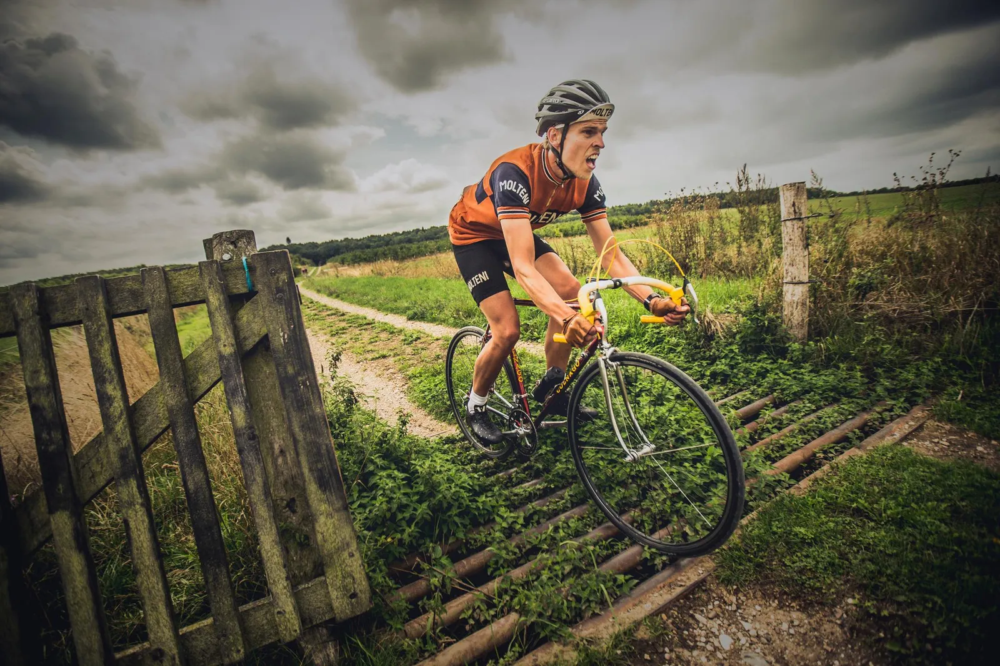
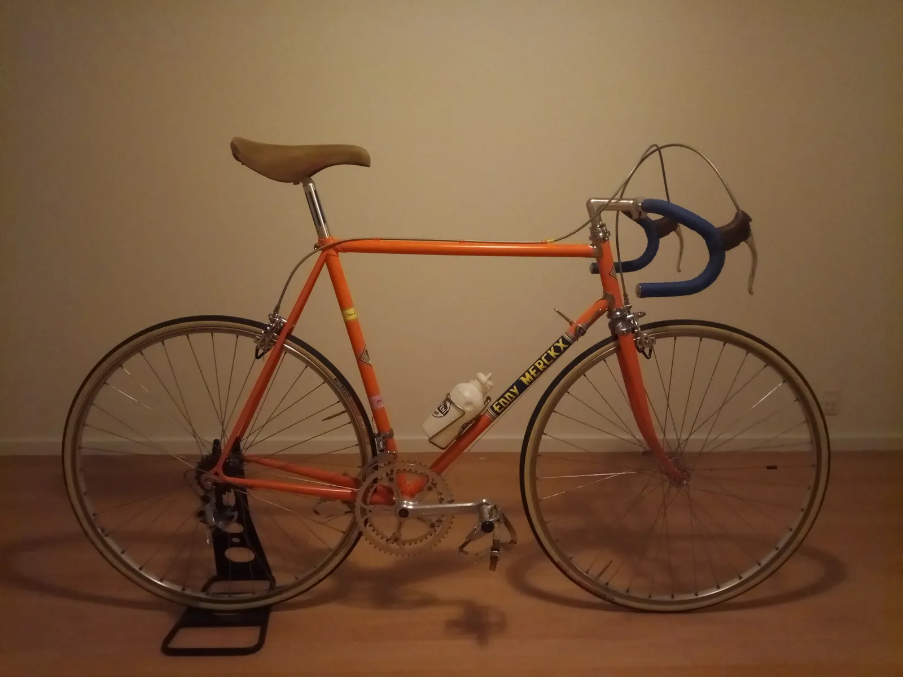
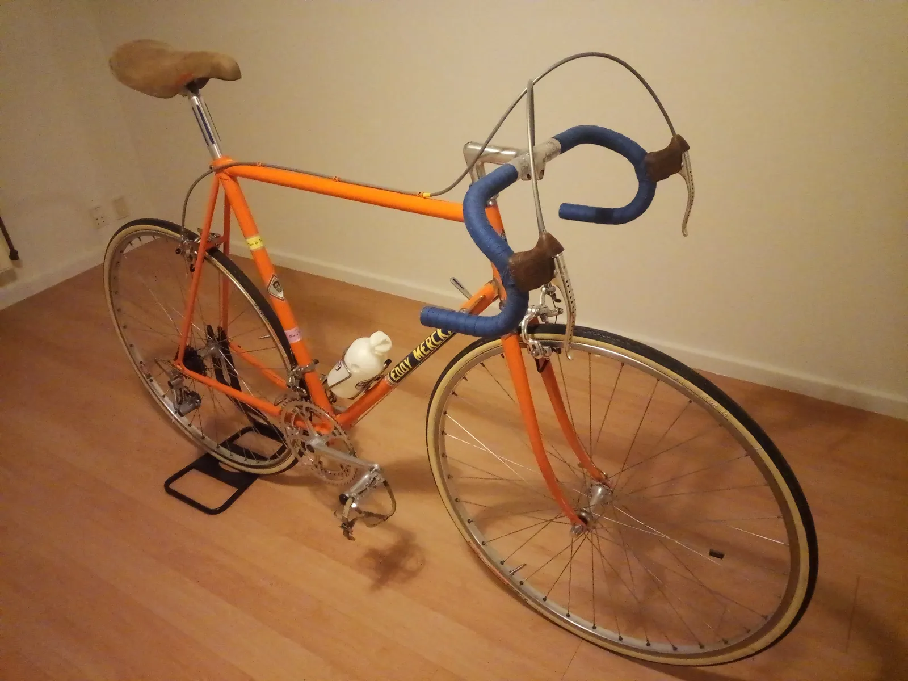
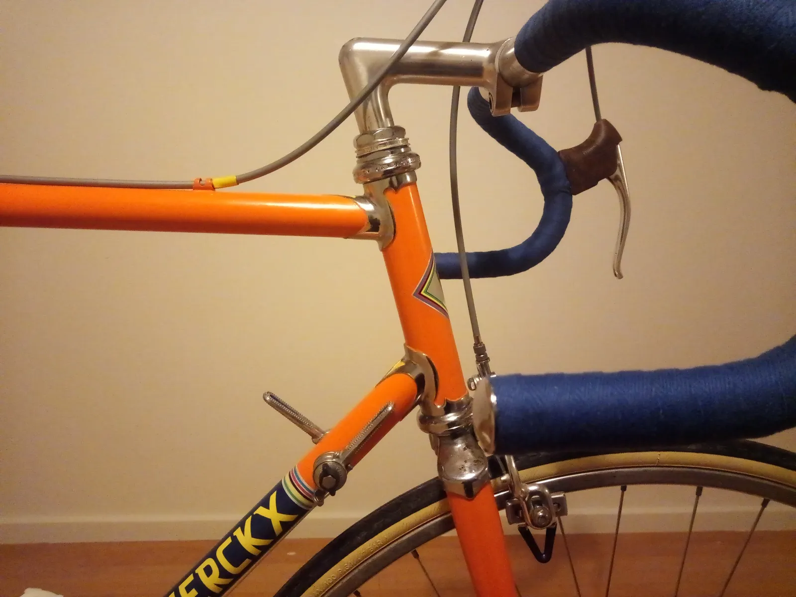
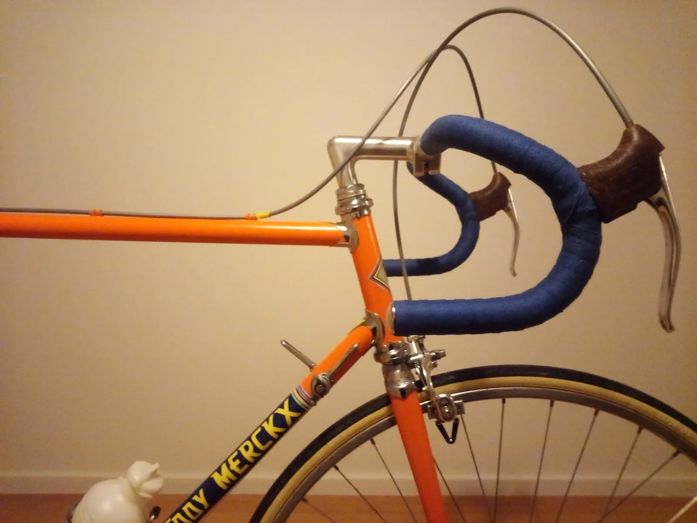
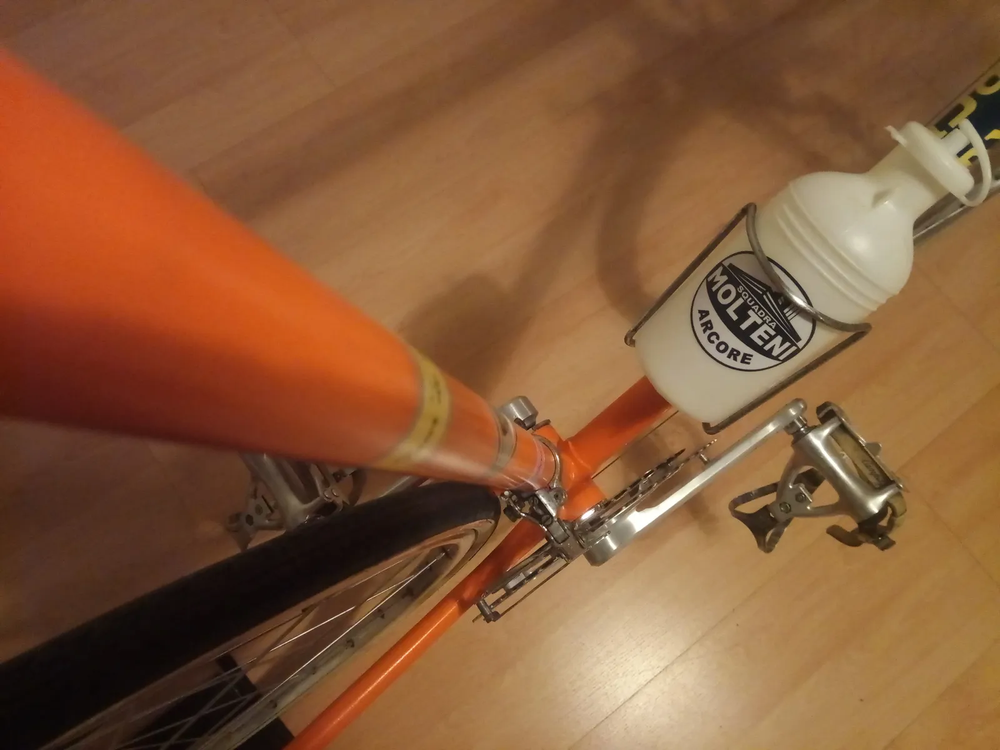
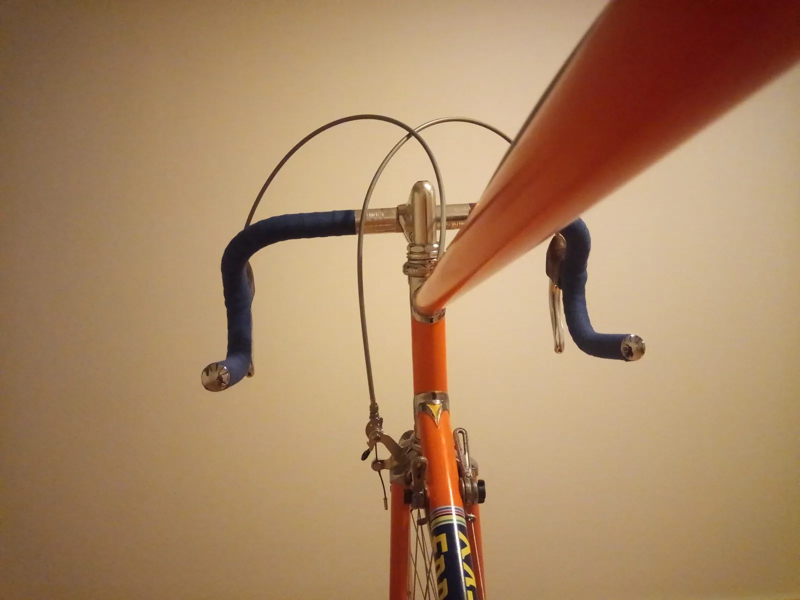
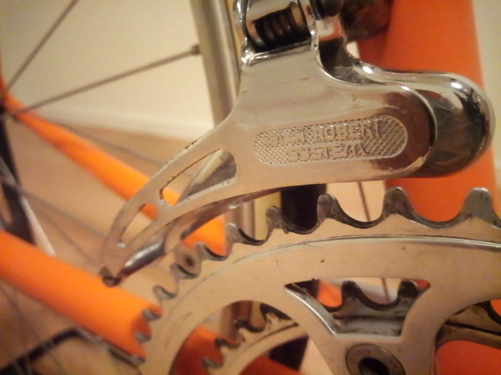
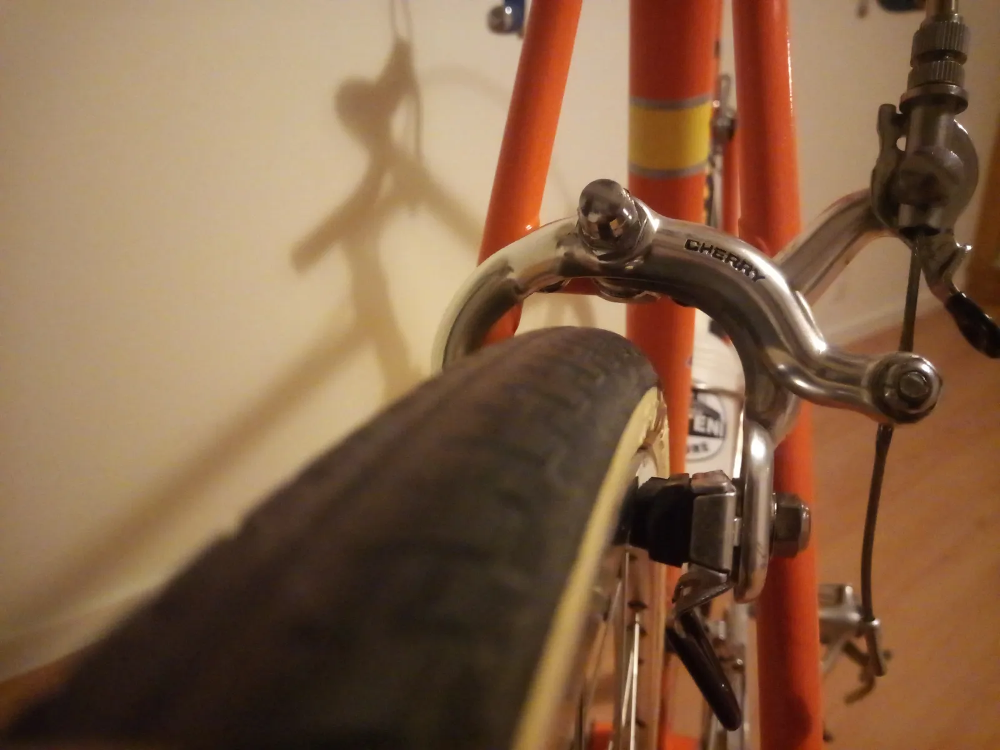
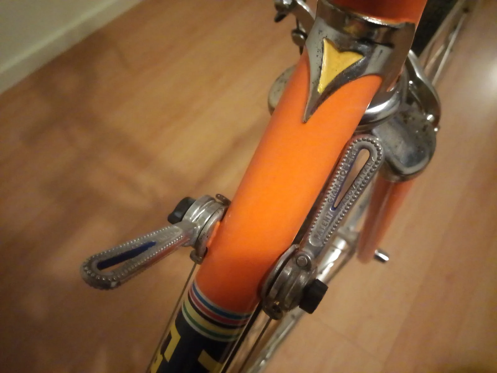

Jeg går kun efter podieplaceringer!

Tema: Sæsonstart 2019 – Jeppe Thiemer
Indefra et kælderrum på Vesterbro lyder der stønne- og pustelyde. Vi er ikke i en gusten sexshop med videokabiner og køkkenrulle. Nej, vi står udenfor Jeppe Thiemers vintertræningslokale og cykelværksted. Jeppe er ved at være klar til sin 2. sæson for Squadra Molteni.
Jeg har fået etableret et cykelværested i kælderen. Her er de vigtige ting – så som blodcentrifuge, hjulopretter og en træningsrulle. Her har jeg tilbragt rigtig mange timer i løbet af vinteren – og det er også blevet til adskillige lokale timerekorder på rullen, fortæller Jeppe.
På et tidspunkt kørte jeg en hel time på blot 30 minutter – så formen er ved at være, hvor den skal være!

Jeppe har også kørt cyklecross i skovene nord for København, og øvet sig i rullende slangeskift. Han indrømmer dog, at han har været millimeter tæt på, at få en tvangsindmeldelse i det Københavske pudselaug (VeloPuds), da tiden i kælderen langt har overskredet tilstedeværelsen på landevejen.
Ja, det er selvfølgelig fordi jeg har været ved at bygge og optimere en Eddy Merckx Molteni cykel. Jeg har slebet, grundet, malet, givet klarlak, poleret, justeret, finjusteret, ekstra finjusteret og ekstra pudset og poleret… Men så var det, at Kaptajnen kom forbi og gav mig en røffel og et ultimatum: Nu smutter du ud og træner på landevejen – eller så melder dig ind i VeloPuds.
15 minutter efter var jeg på landevejen, griner Jeppe.
Jeppes sæson starter i år den 7. april, hvor han skal køre Ronde van Borum for første gang. Et løb han virkelig ser frem til.
Jeg har hørt at der bliver kørt stærkt. Jeg varmer op med en lille tur fra København til Djursland dagen før – så er jeg klar til at hjælpe Kristian Blume frem til en podieplads, fortæller Jeppe.
Mit næste løb i moltenitrøjen bliver Grand Prix Vejle Ådal, hvor jeg går efter en podieplacering. Hvilken placering det bliver, kommer helt an på hvad Løjtnanten, Marckx Pedersen og jeg aftaler indbyrdes i udbruddet, fortsætter en selvsikker Jeppe.
Mellem Ronde van Borum og Grand Prix Vejle Ådal har Jeppe også forårsklassikenen La Fleche Vejllonne på programmet. Men her stiller Jeppe op for Team Puch Wolber Campagnolo.
Min kontrakt med Squadra Molteni tillader også, at jeg kan køre et antal løb for det franske Team Puch Wolber Campagnolo. Det giver godt nok ikke så meget i løn – men jeg får da en landbrie og et par flasker fransk rødvin, hvis jeg får en pæn placering.
Senere på året kommer et af monumenterne – Kroppedal Grand Prix. Her er Jeppes mål endnu en podieplads.


Jeg må huske ikke at punktere denne gang, som jeg gjorde sidste år. Dér havde jeg diamanter i benene og jeg havde lige sagt til Mark og Kasper, at nu rykkede jeg, og at de skulle bakke af. Og så punkterede jeg med et brag!
Udover de fire fastlagte løb håber Jeppe også at kunne klemme andre løb ind i kalenderen – specielt Arresø Rundt, hvor han skal forbedre sidste års tredjeplads.
Fakta om Jeppes Eddy Merckx Molteni cykel


















Min Eddy Merckx cykel er bygget på en baskisk Zeus-ramme fra begyndelsen af 1980erne. Derailleurs og skrårørsskifterne er italienske fra Gian Robert, garnituren er specialfremskaffet Campagnolo fra katakomberne ude hos Jacob Ingemann på Midtsjælland. Det samme er gældende for styrfitting. Frempind og styr fra Cinelli og bremserne er nogle japanske Campagnolo-kopier af mærket Cherry. Sadelpinden er lang nok, og bære en meget slidt og grim sadel (donationer modtages).
Jeppe har selv udført malearbejdet og det har givet cyklen sjæl og en medfødt patina som er umulig at påføre på landevejen. Den er desuden blevet dækket med en speciel vindafvisende lak.
Der mangler selvfølgelig en kæde, men den er ved at blive specialsmedet på et hemmeligt skibsværft i Nordtyskland. Den skal jo kunne holde til op til flere watt!
Foto: Martin Paldan og Jeppe Thiemer